Comment se déroule un spectacle de magie pour enfants ?
En brefDurée : environ 1 hEnfants de 3 à 12 ansGroupes de 10 à 80 enfantsEspace de 3 m × 2 m suffisantSonorisation incluse
Francis propose un spectacle d'environ une heure, avec un répertoire adapté à l'âge des enfants (de 3 à 12 ans) et surtout une participation très active du jeune public. De spectateurs, ils deviennent acteurs de la magie : ils montent sur scène, aident le magicien et vivent les tours de l'intérieur.
C'est un spectacle chaleureux et ludique, fait de rire, de rêve et d'émerveillement. Il peut être accompagné de sculpture sur ballons : chaque enfant repart alors avec sa création. Parfait pour les anniversaires, arbres de Noël, écoles, centres de loisirs et fêtes de famille.
Francis intervient à Issoudun, Châteauroux, Bourges, Vierzon et dans tout le Centre-Val de Loire. Il apporte sa propre sonorisation et s'adapte à tous les espaces : salle polyvalente, cour d'école, salon privé ou salle des fêtes.
Pour un anniversaire réussi : spectacle de magie + sculpture sur ballons. Chaque enfant repart avec sa création et ses souvenirs plein la tête.
Pour quelles occasions ?
- Anniversaires et fêtes d'enfants (3-12 ans)
- Arbres de Noël et comités d'entreprise
- Écoles, centres de loisirs et accueils périscolaires
- Fêtes de village et événements publics
- Spectacle interactif d'environ 1 heure, sonorisation incluse
« Magicien qui a ravi les enfants du centre de loisirs : une matinée d'initiation et un spectacle l'après-midi. Pédagogue et professionnel. Au top ! Merci Francis. »
— Morgan Collin, avis Google
Questions fréquentes sur les spectacles enfants
À partir de quel âge les enfants apprécient-ils le spectacle ?
Le spectacle est adapté aux enfants à partir de 3 ans. Francis ajuste son répertoire et sa pédagogie en fonction de l'âge du groupe. Les enfants de 5 à 10 ans sont le public idéal : ils participent activement et en gardent un souvenir marquant.
Combien d'enfants peuvent assister au spectacle ?
Il n'y a pas de limite stricte. Francis a l'habitude d'animer devant des groupes de 10 à 80 enfants. Au-delà, le format peut être adapté avec une sonorisation renforcée. Pour un anniversaire privé, 8 à 20 enfants est la taille idéale.
Quel espace faut-il prévoir ?
Un espace d'environ 3 m × 2 m suffit pour le magicien, avec les enfants assis devant. Francis apporte sa sonorisation et s'adapte : salon, salle polyvalente, cour d'école ou salle des fêtes.
Francis peut-il animer un anniversaire à domicile ?
Oui, Francis se déplace directement chez vous avec tout son matériel. Salon, jardin, garage aménagé — il s'adapte à n'importe quel espace pour créer un moment inoubliable. Les formules anniversaire peuvent combiner spectacle de magie et sculpture sur ballons pour une animation complète. Francis intervient à Issoudun, Châteauroux, Bourges et dans toutes les communes environnantes de l'Indre et du Cher.
Intervenez-vous pour les arbres de Noël et les kermesses ?
Régulièrement. Comités d'entreprise, écoles et associations font appel à Francis pour leurs arbres de Noël et leurs kermesses, à Issoudun, Châteauroux, Bourges ou Vierzon.
Et si un enfant est timide ?
Personne n'est jamais forcé. Francis repère les enfants réservés et les fait participer depuis leur place, à leur rythme. Ce sont souvent eux qui finissent par lever la main.
En images
Cliquez sur une photo pour l'agrandir.
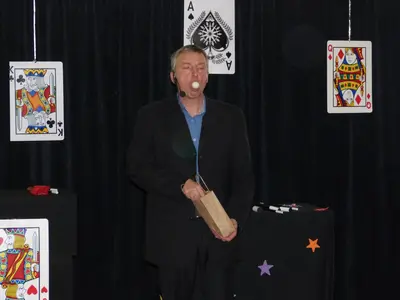
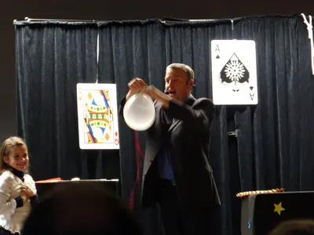
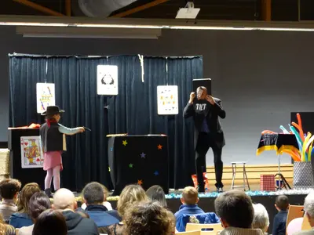
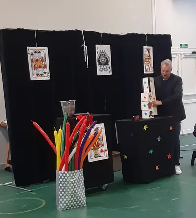
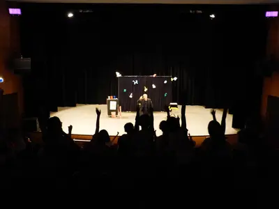
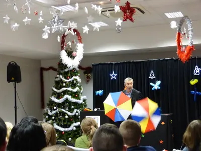
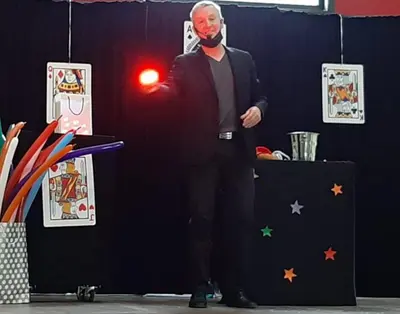
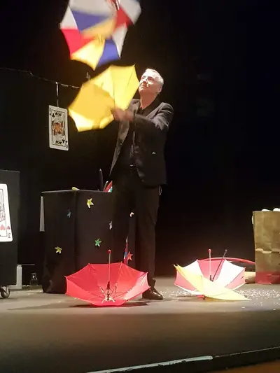
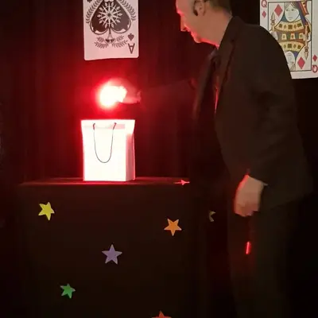
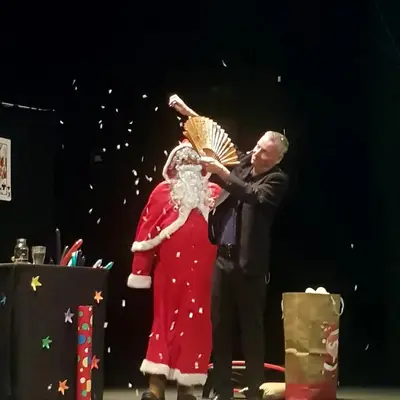

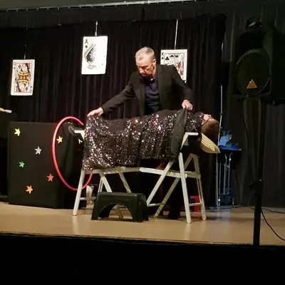
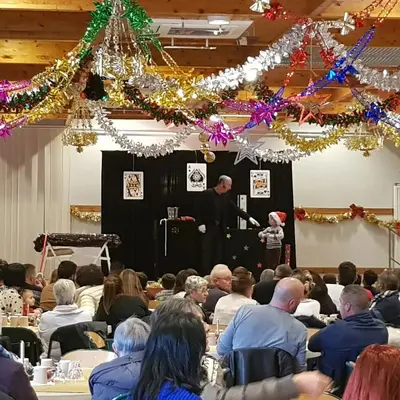
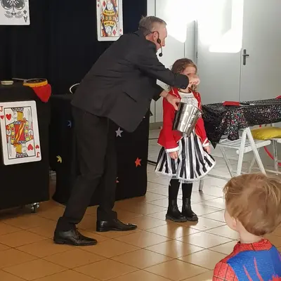
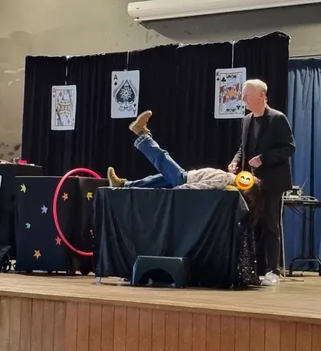
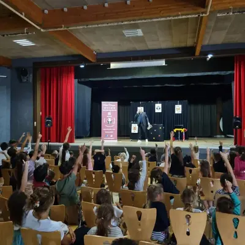
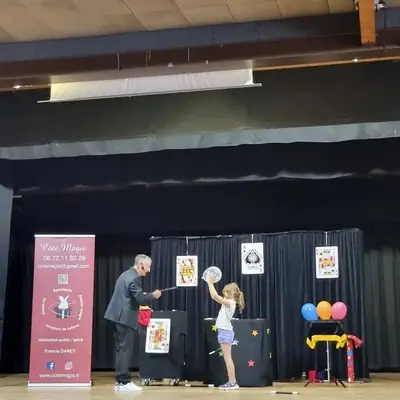
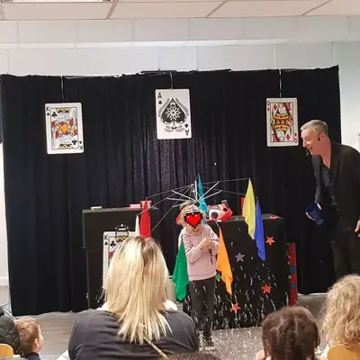
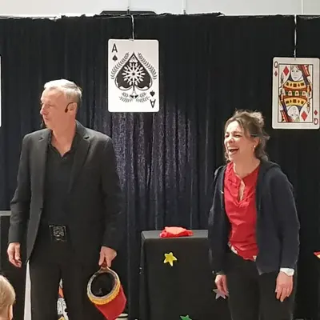
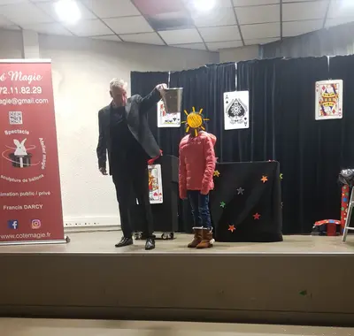
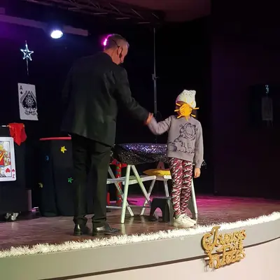
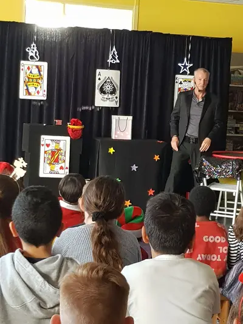
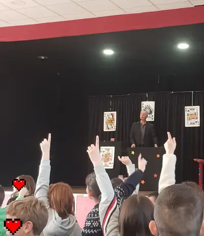
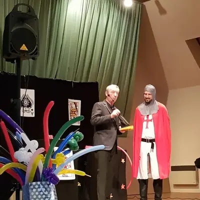
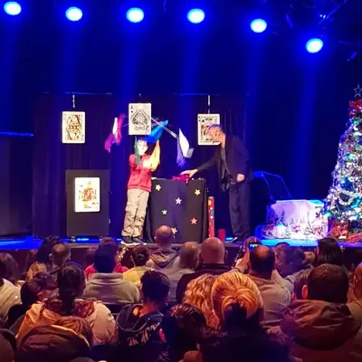
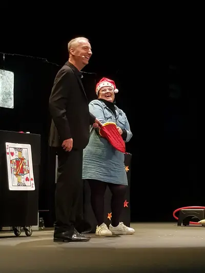
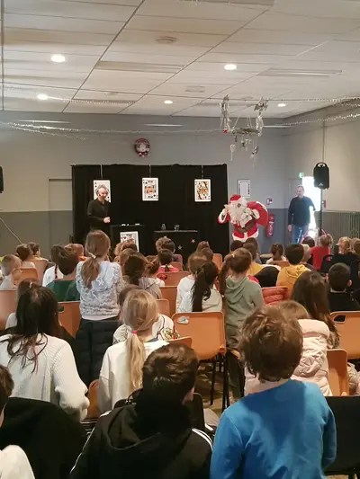
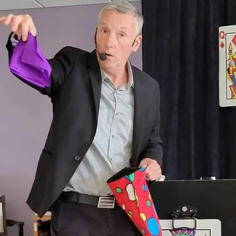
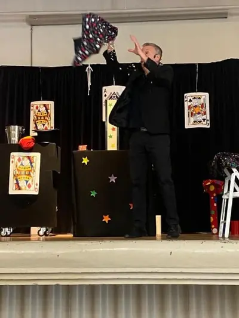
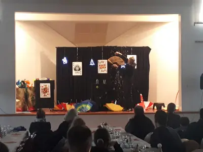
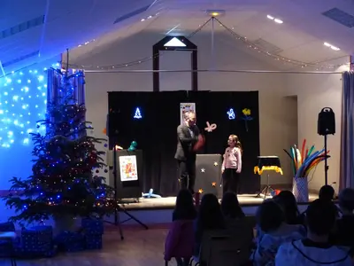
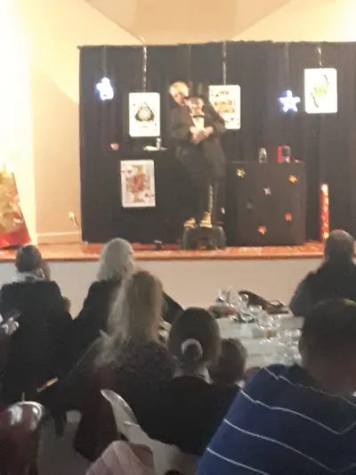
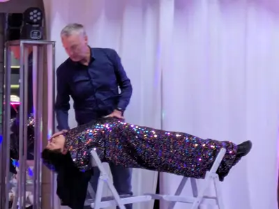
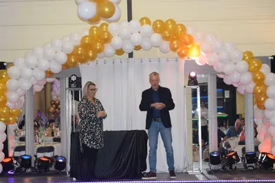
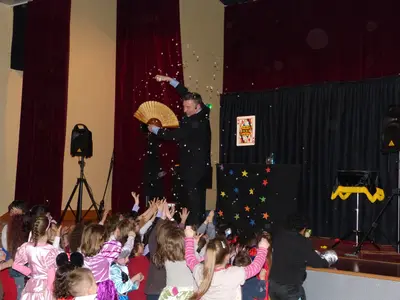
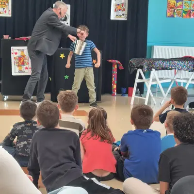
Autres prestations
Envie de magie pour votre événement ?
Parlez-en à Francis : il vous répond personnellement et établit un devis gratuit sous 24 heures.
Issoudun · Indre · Centre-Val de Loire